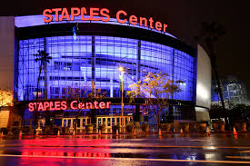

Equipos
Campeones
Estadios
Tienda
Los Estadios de la NBA
Staples Center

American Airlines Arena
Moda Center
Wells Fargo Center
Fiserv Forum
United Center
Rocket Mortage FieldHouse
TD Garden
FedEx Fourm
State Farm Arena
Spectrum Center
Vivint Arena
Golden1 Center
Madison Square Garden
Amway Center
American Airlines Center
Barclays Center
Ball Arena
Bankers Life Fieldhouse
Smoothie King Center
Little Cesars Arena
Toyota Center
AT&T Center
Talking Stick Resort Arena
Chesapeake Energy Arena
Scotiabank Arena
Chase Center
Capital One Arena
Target Center